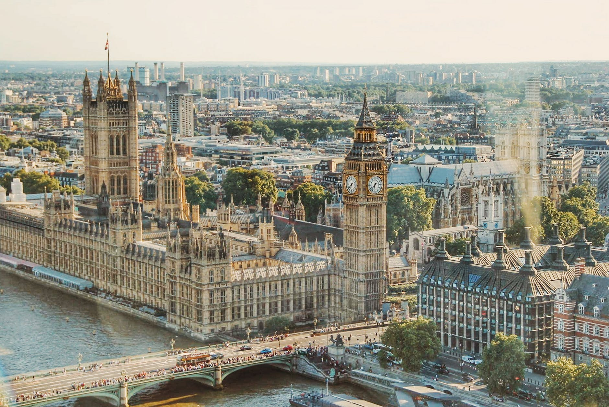

Esta página web tiene el objetivo de informar a nuestros espectadores sobre numerosas ciudades.
Para estrenarla, empezaremos hablando sobre Londres
Londres es la capital del Reino Unido y se encuentra en las orillas del Támesis. Además, pertenece a la nación constitutiva de Inglaterra. Por tanto, hasta el 31 de octubre, que es la fecha límite que le dió la UE para decidirse, pertenece a la misma.
La lengua oficial del Reino Unido es el inglés, que es hablado como lengua primaria del 95% de la población del Reino Unido. Junto a esta lengua oficial existen otras lenguas regionales habladas sólo en algunas regiones del territorio, como el idioma galés que es también una lengua oficial en Gales, y es la segunda lengua más hablada en el Reino Unido. Además, existen varias lenguas vivas autóctonas al territorio.
Londres es una de las ciudades más visitadas del mundo, teniendo en el 2016 20 millones de turistas (convirtiéndose en el país europeo más visitado). Algunos de sus puntos turísticos son:
¡ESPERAMOS QUE OS HAYA GUSTADO!